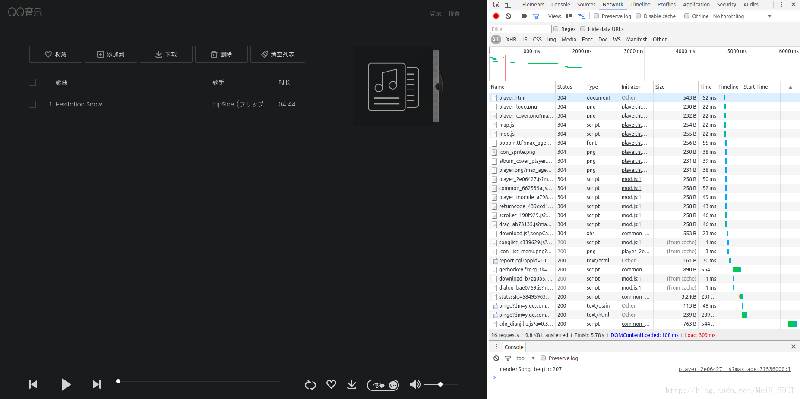
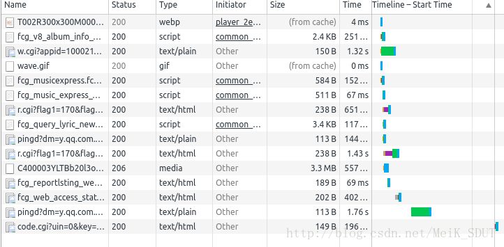
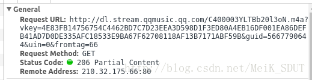
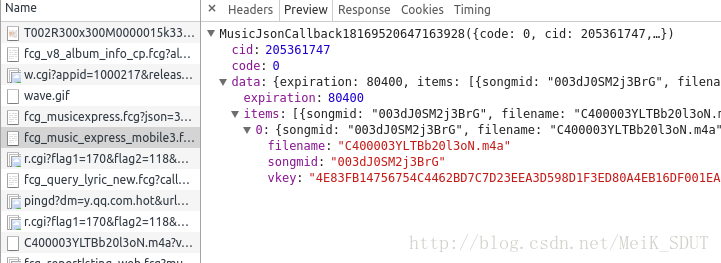
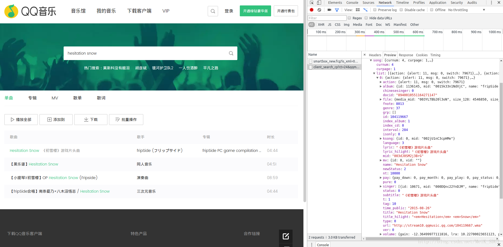

QQ 音乐没有 Linux 版本，但是有网页 QQ 音乐，我们可以通过网页 QQ 音乐来获取一些神奇的接口。
转自我自己的博客（CSDN），额外有更新的内容。看自己一年前的博客和代码感觉好羞耻，尤其是自己当时那么菜（当然现在也菜）……
一直在Ubuntu系统下使用QQ音乐网页版，这天突发奇想，既然QQ音乐不是flash播放器，那能不能抓到音乐的下载地址呢？说干就干，我打开QQ音乐网页版的页面，开始分析他的请求。

打开页面，是一堆请求，这些请求对于我的需求都没有什么卵用。清除掉这些请求，然后点击播放音乐。

可以看到，请求中唯一的一个媒体文件，C400开头的那个请求，就是请求的音乐资源，点开这个请求，查看这个请求的URL。

复制这个URL到地址栏打开，果然就是我们要的音乐文件。经过尝试，必需的请求参数有vkey和guid，其中guid与cookie中的pgv_pvid字段相同。
之后分析vkey字段的来源，向上查找请求，果然发现在一个请求的返回中有这个vkey的值。

然后查看这个请求的请求参数，经过尝试后发现，必需的参数有cid、songmid、filename、guid这四项，其中guid现在已知，之后就是找到另外三项的来源，这时候，虽然在上面的请求中也发现了其中两个字段，但是经过分析，并不是我想要的。
从字段的名称上来看，某首歌的filename和songmid应该与这首歌本身有关联，我打开了音乐的搜索界面，很轻松的就找到了QQ音乐搜索的接口。然后在搜索的返回数据中，果然找到了这两项的值。

对每首歌的信息，filename对应这首歌的信息的file下的media_mid项，而mid对应songmid。这时候只剩下了一个cid还不知道是多少，因为在整个过程中，我都没有找到这个值，因此我假设这个值是个固定值。以此假设为前提写了个py程序跑了一下，发现果然是这样。
综合之上的所有信息，我写了个Python程序来完成搜索+下载的功能，后来我又想到，最好是能够同时把歌词也下载下来，于是我就又去抓歌词的URL。
歌词的URL很容易就找到了，但是当我复制这个URL在地址栏打开的时候却发现并不能打开，cookie都是相同的，那么打不开的原因应该就是在header里了。我对比请求中的header，果然发现有个referer值不同，在Python中，修改这个referer值后请求页面果然正常打开了。返回的数据经过base64解码后就是歌词。
最后的最后，我发现，返回数据中有个trans字段，当歌曲有翻译时，该字段不为空，然后只有cookie中包括“skey=@LVJPZmJUX;”时才会把翻译一同返回。对程序略作修改，最后完成了整个的程序。
整个程序代码我已经放到github上，地址：https://github.com/MeiK2333/QQMusicAPI 。有兴趣的同学可以看一下，虽然只是个雏形。
以上是我之前写的内容，因为之前的代码实在让我看不下去，因此我更新了一下代码，还是在原来的 github 链接。
还有一件有意思的事情，去年我在写代码的时候，为了生成一个九位数的随机数，自己随便手写了一个生成的方法。然后今天在写博客之前顺手搜了一下，发现好几个带着这段代码的博客和提问，有几个人在各个论坛里问这段代码的意思，以及如何将这段代码翻译成其他语言……这让我知道了，即使博客没有留言，也不代表没有人在看……写代码要写清楚，不能敷衍。
还有就是，要是我的博客对读者能起到一点点作用的话，还是希望你们能留个言，让我知道我的博客不是没有人看……